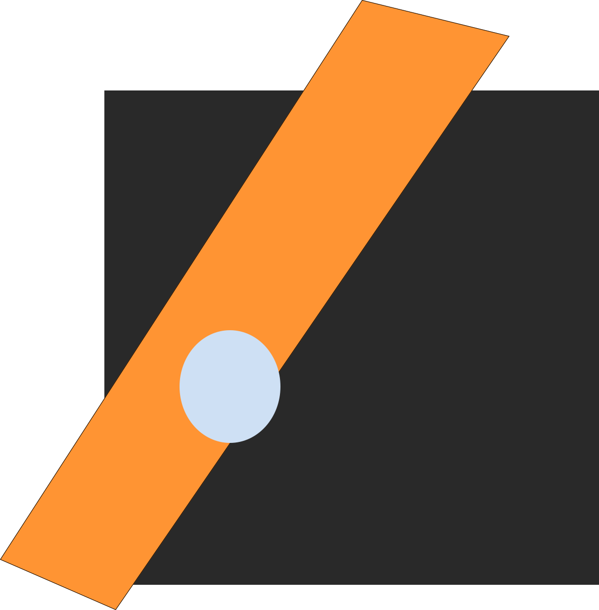

Di masa depan kamu akan memiliki proyek besar yang membutuhkan engineer yang memiliki banyak minat dan kemampuan.
Saat ini aku masih beljar html yang sudah pernah ku kuasai. Tunggu aku
katalog HTML
Inspirasi logo: Blue Pale Dot . Sebuah foto yang diambil oleh voyager 1. Salah satu foto paling pertama bumi secara keseluruhan. Selfie seluruh manusia di bumi.
sebuah harapan paling non-realistis yang kumiliki agar semua manusia sadar bahwa mereka hanyalah mahluk kecil di dalam planet kecil, yang ditantang oleh perubahan iklim perang,korupsi, rasisme, dan egoisme ditengah hampanya luas alam semesta
seluruh bagiannya dibuat banyak ketaksimetrisan sebagai simbol untuk menerima bumi ini apa adanya